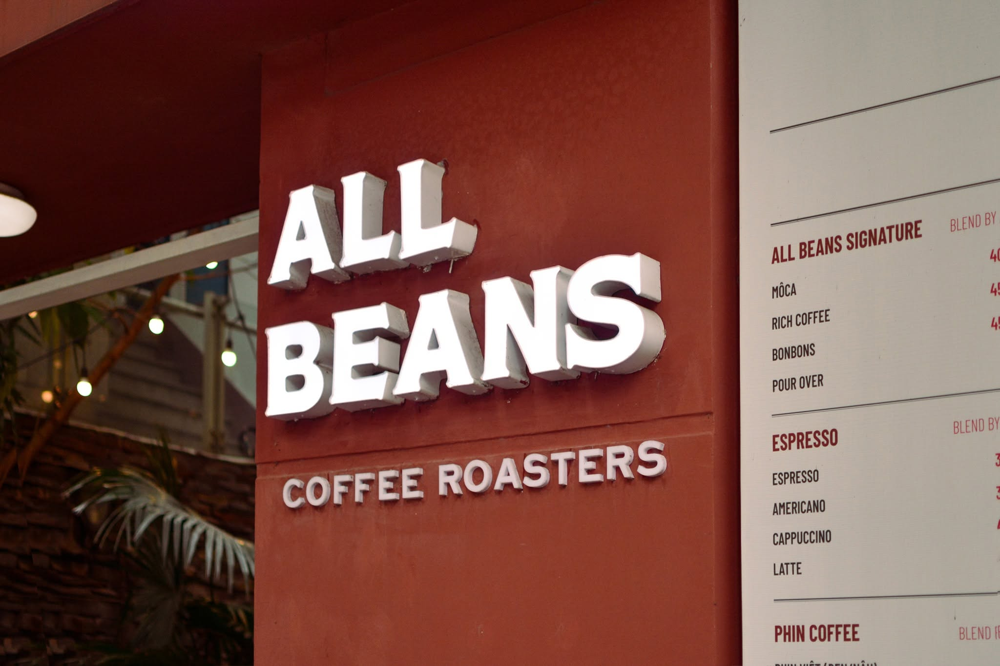
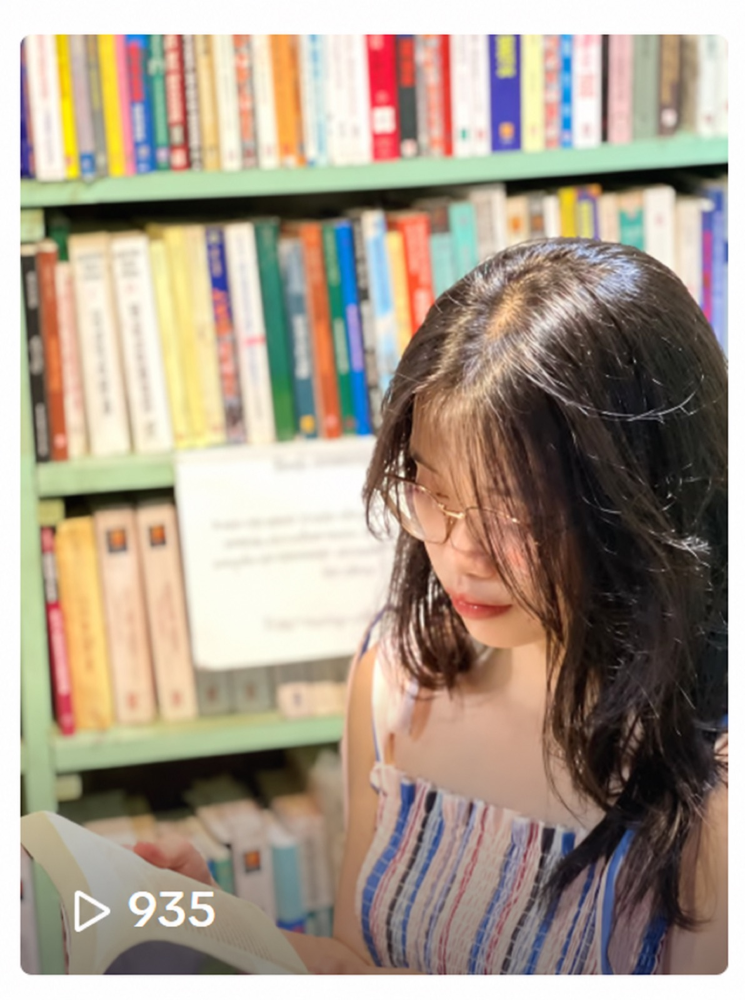

A LITTLE ABOUT ME
Hello,
I'm Linh!
Mình là Linh, có nền tảng Truyền thông đa phương tiện và đang phát triển bản thân trong lĩnh vực sáng tạo nội dung.
Mình đã có cơ hội trải nghiệm nhiều công việc khác nhau như phát triển nội dung mạng xã hội, viết kịch bản, biên tập video, VJ và tham gia các dự án sản xuất TVC. Mỗi trải nghiệm giúp mình hiểu thêm về cách một ý tưởng được hình thành và trở thành sản phẩm truyền thông.
Ngoài công việc, mình thích quan sát cuộc sống, tìm hiểu tâm lý và hành vi con người. Mình luôn tò mò về những điều diễn ra phía sau suy nghĩ, cảm xúc và cách chúng ta kết nối với nhau.
Với mình, sáng tạo nội dung không chỉ là tạo ra một sản phẩm, mà còn là quá trình quan sát, khám phá và tìm ra cách diễn đạt điều mình muốn truyền tải.
A LITTLE BIT OF EVERYTHING
Content
Social✳
Những lát cắt từ các dự án nội dung và kênh mình từng tham gia.
Xem chi tiết bên dưới

F&B - Cà phêAll Beans Coffee Roaster↗
Dự án cá nhânLạc Đà Podcast↗